Bayesian Linear Regression
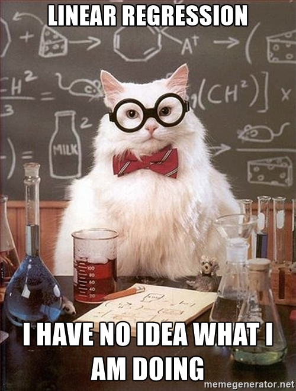
Why Linear Regression: A Simple Statistical Golem

- Describes association between predictor and response
- Response is additive combination of predictor(s)
- Constant variance
Why should we be wary of linear regression?
- Approximate
- Not mechanistic
- Often deployed without thought
- But, often very accurate
Why a Normal Error Distribution
- Good descriptor of sum of many small errors
- True for many different distributions
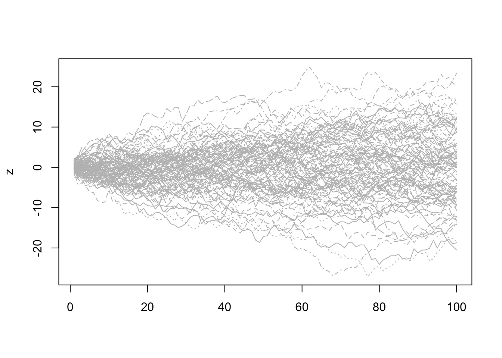
Why a Normal Error Distribution
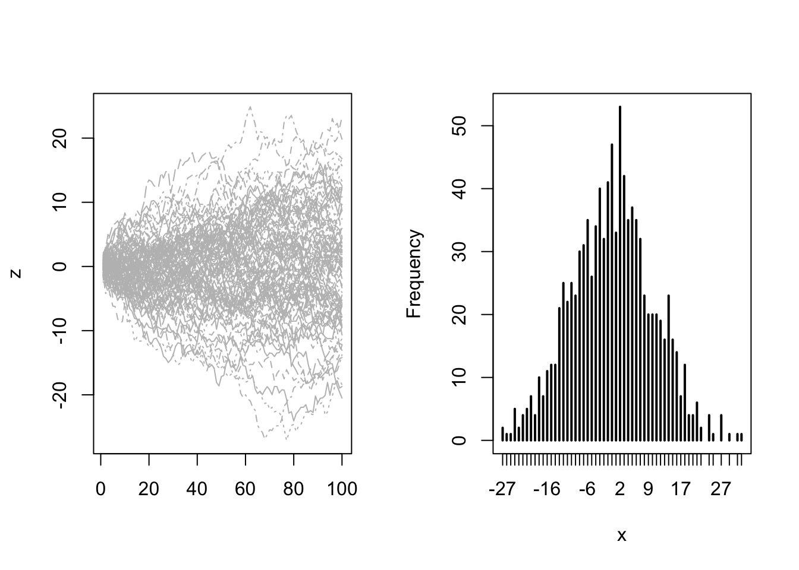
Flexible to Many distributions
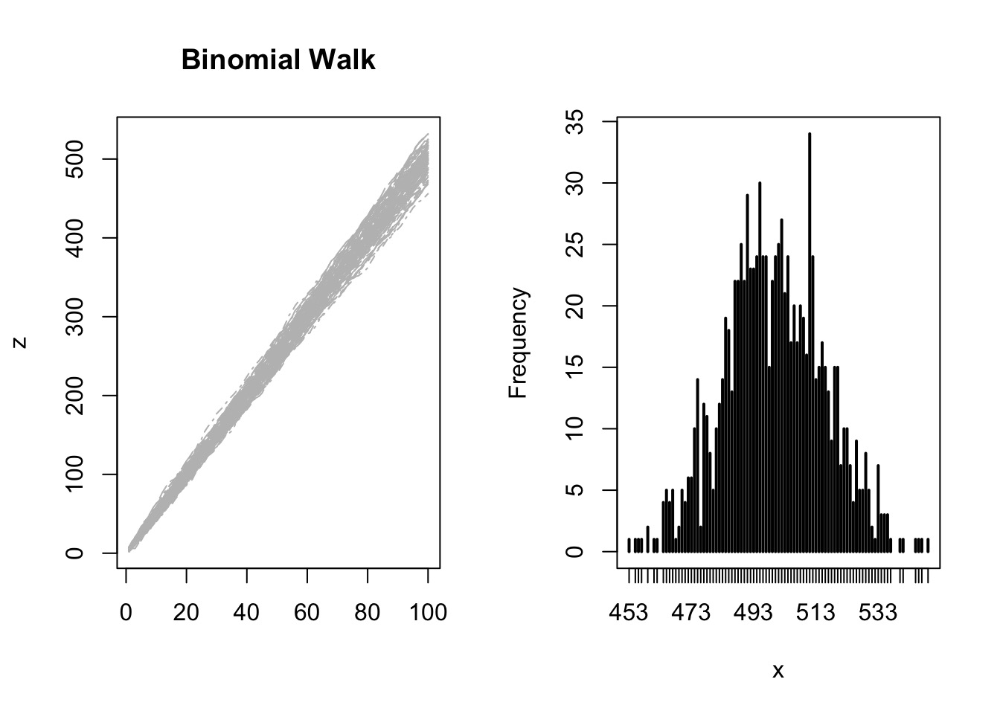
Try it: the Central Limit Theorem
library(rethinking)
simplehist(replicate(10000, sum(rbeta(100,1,1))))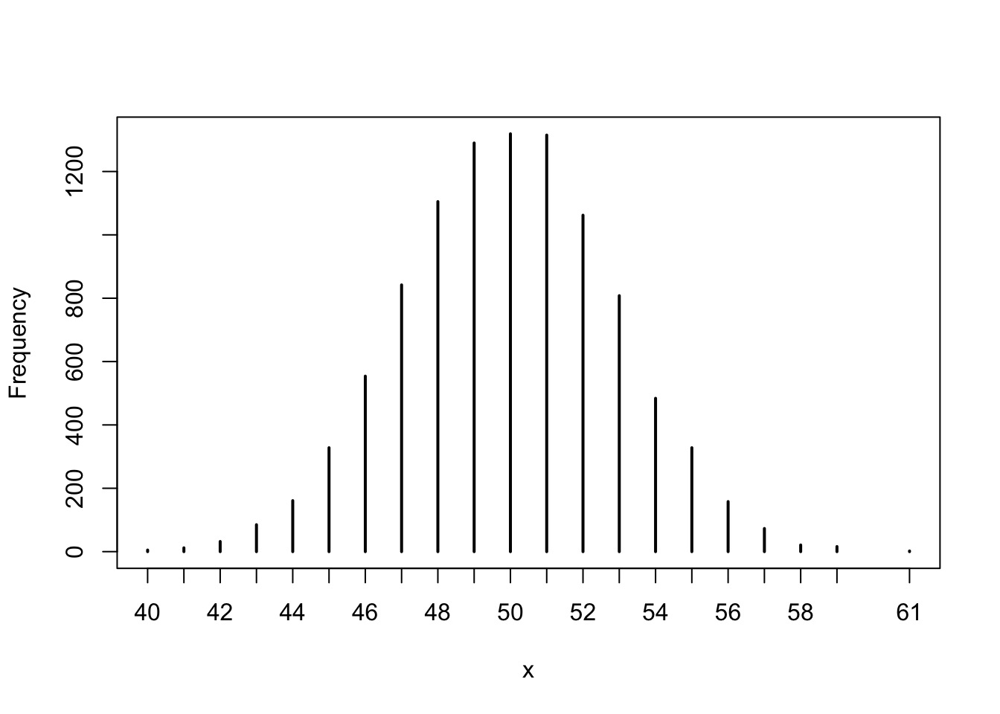
So, how do we build models?
- Identify response
- Determine likelihood (distribution of error of response)
- Write equation(s) describing generation of predicted values
- Assign priors to parameters
Our Previous Model
Likelihood:\(w \sim Binomial(6, size=9, prob = prob)\)
Prior:
\(prob \sim Uniform(0,1)\)
A Normal Model
Likelihood:\(y_i \sim Normal(\mu, \sigma)\)
Prior:
\(\mu \sim Normal(0,1000)\)
\(prob \sim U(0,50)\)
A Model of a Mean
data(Howell1)
Howell1_Adult <- Howell1 %>%
filter(age >= 18)Height-Weight relationships of the !Kung San
Our Model
Likelihood:\(h_i \sim Normal(\mu, \sigma)\)
Prior:
\(\mu \sim Normal(150, 20)\) From the data
\(\sigma \sim U(0,50)\) Wide range of possibilities
Priors

Grid Sampling
# Make the grid
grid <- crossing(mu = seq(140, 160, length.out=200),
sigma = seq(4, 9, length.out=200)) %>%
#Calculate the log-likelihoods for each row
group_by(1:n()) %>%
mutate(log_lik = sum(dnorm(Howell1_Adult$height, mu, sigma, log=TRUE))) %>%
ungroup() %>%
# Use these and our posteriors to get the numerator
# of Bayes theorem
mutate(numerator = log_lik +
dnorm(mu, 150, 20, log=TRUE) +
dunif(sigma, 0,50, log=TRUE)) %>%
#Now calculate the posterior (approximate)
mutate(posterior = exp(numerator - max(numerator)))Posterior
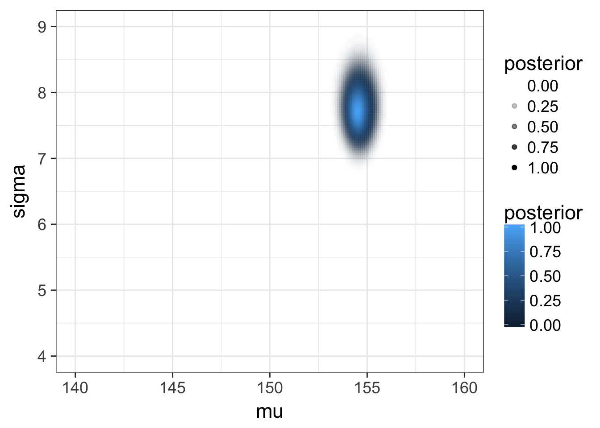
Posterior from a Sample
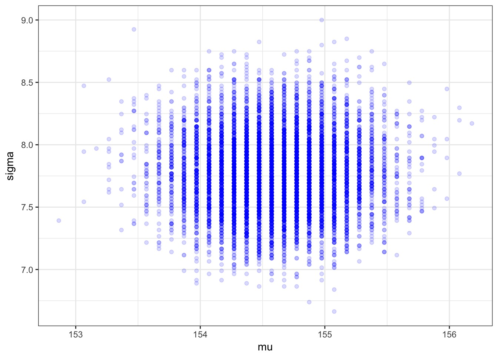
Or, let’s Reconceptualize With a Model
Likelihood:\(h_i \sim Normal(\mu, \sigma)\)
height ~ dnorm(mu, sigma)Prior:
\(\mu \sim Normal(150, 20)\) mu ~ dnorm(150, 200)
\(\sigma \sim U(0,50)\) sigma ~ dunif(0,50)
Feed the Model to Maximum A Posterior Approximation
mean_mod <- alist(
#likelihood
height ~ dnorm(mu, sigma),
#priors
mu ~ dnorm(150, 20),
sigma ~ dunif(0,50)
)
mean_fit <- map(mean_mod,
data = Howell1_Adult)Compare map to grid
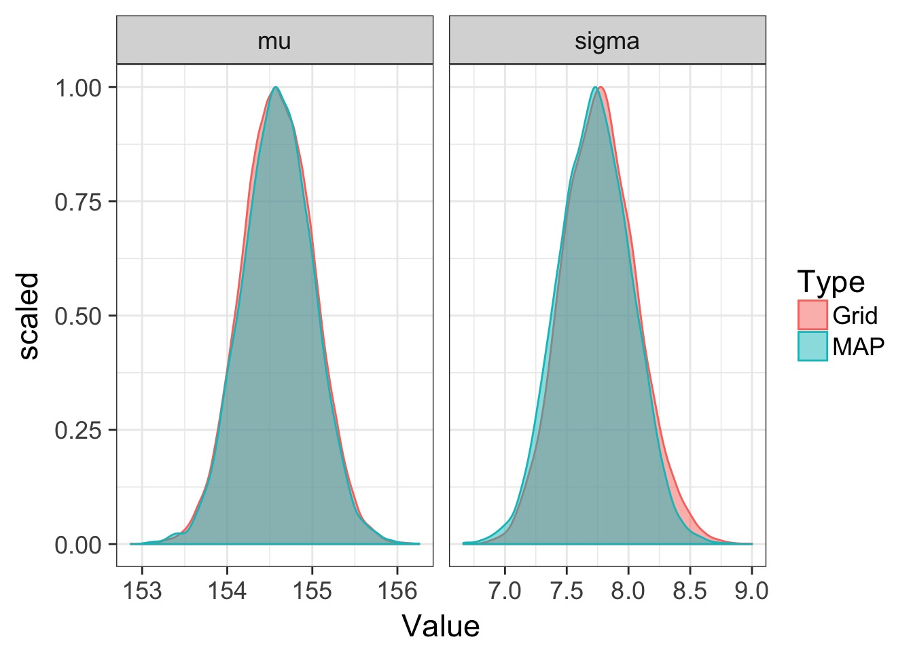
Adding a Predictor
- Identify response
- Determine likelihood (distribution of error of response)
- Write equation(s) describing generation of predicted values
- Assign priors to parameters
Now Mean Changes with predictor
Likelihood:
\(h_i \sim Normal(\mu_i, \sigma)\)
Data Generating Process
\(\mu_i = \alpha + \beta x_i\)
Prior:
\(\alpha \sim Normal(178, 100)\) Reasonable Range from data
\(\beta \sim Normal(0, 10)\) Weakly Informative
\(\sigma \sim U(0,50)\) Wide range of possibilities
Our Linear Model
weight_mod <- alist(
#likelihood
height ~ dnorm(mu, sigma),
#Data generating process
mu <- alpha + beta * weight,
#priors
alpha ~ dnorm(178, 100),
beta ~ dnorm(0, 10),
sigma ~ dunif(0,50)
)
weight_fit <- map(weight_mod,
data = Howell1_Adult)The fit
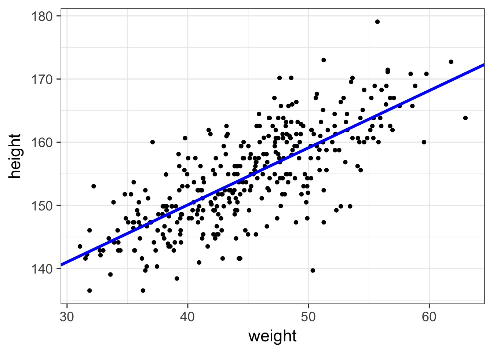
So, what do we do with a fit model?
- Evaluate model assumptions
- Evaluate model estimates and meaning
- Assess uncertainty in fit
- Assess uncertainty in prediction
Sampling from the Posterior Predictions
We use link to extract from the link (prediction) function:
fit_vals_sim <- link(weight_fit, n = 1e4, refresh=0)
dim(fit_vals_sim)[1] 10000 352fit_vals <- apply(fit_vals_sim, 2, median)
fit_pi <- apply(fit_vals_sim, 2, HPDI, prob=0.8)QQ, etc…
res_vals <- Howell1_Adult$height - fit_vals
qqnorm(res_vals); qqline(res_vals)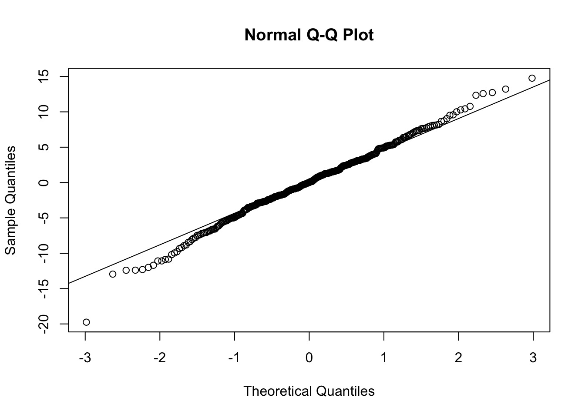
Observed - Fitted
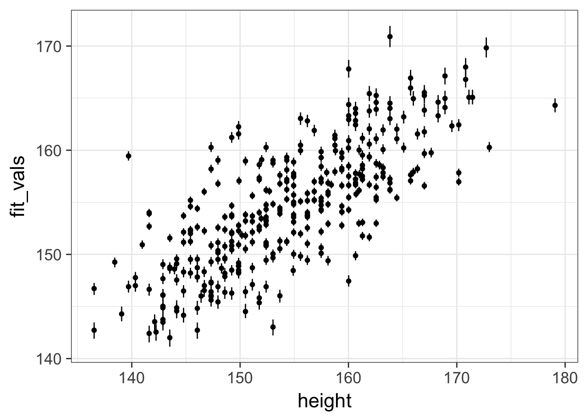
Fit-Residual
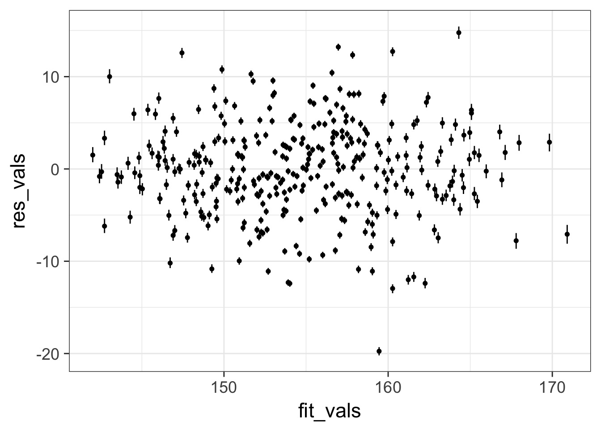
Model Results
precis(weight_fit, cor=TRUE) Mean StdDev 5.5% 94.5% alpha beta sigma
alpha 113.90 1.91 110.86 116.95 1.00 -0.99 0
beta 0.90 0.04 0.84 0.97 -0.99 1.00 0
sigma 5.07 0.19 4.77 5.38 0.00 0.00 1- Are these meaningful?
- Should you standardize predictors for a meaningful intercept?
- Is this the right interval?
Model Results
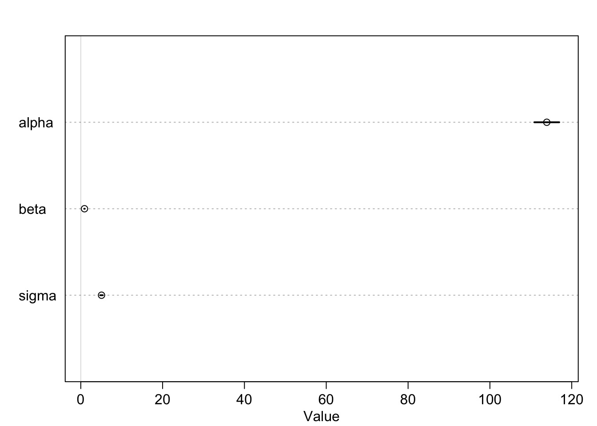
Sampling from the Posterior Distribution
post <- extract.samples(weight_fit, 1e4)
head(post) alpha beta sigma
1 115.2085 0.8735581 5.466552
2 109.6589 0.9952665 5.091604
3 115.8158 0.8565583 5.063665
4 112.9260 0.9288220 5.235847
5 112.9272 0.9191604 5.057091
6 114.7322 0.8861771 5.331461Posterior!
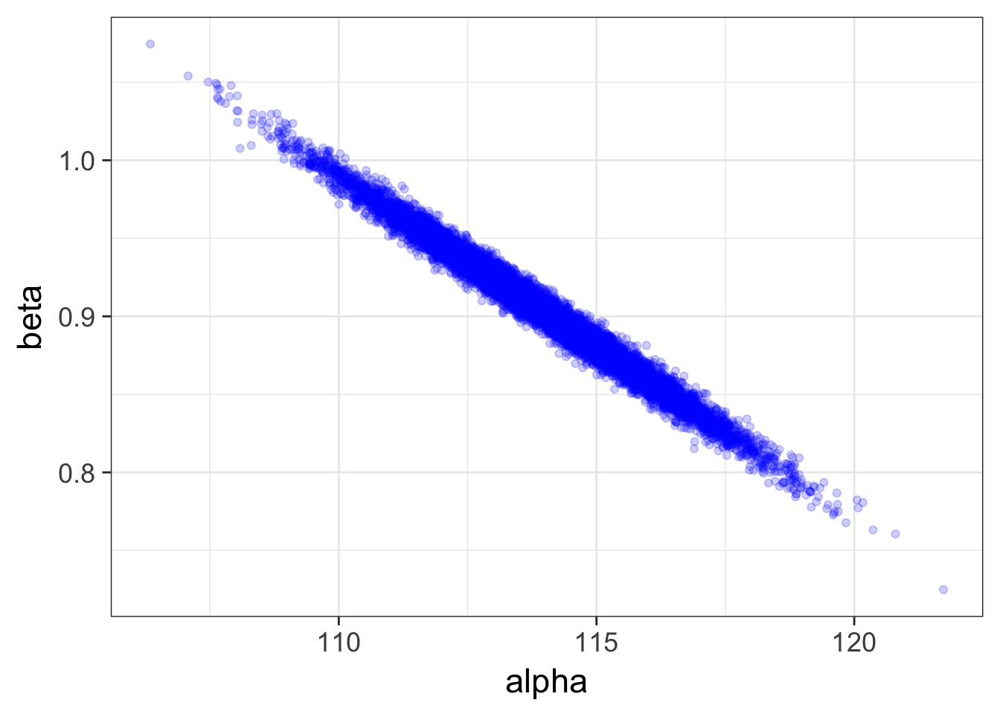
Posterior!
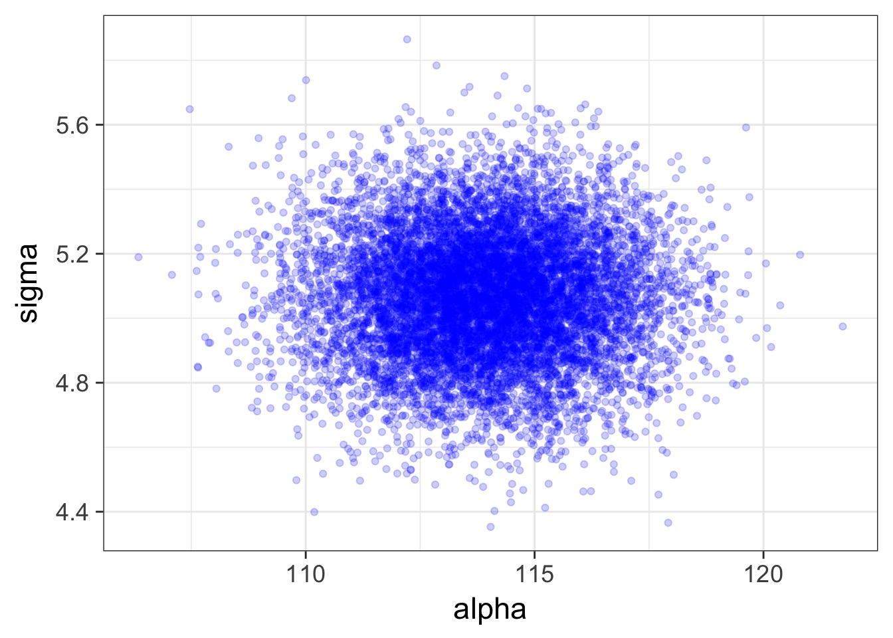
How Well Have we Fit the Data?
ggplot() +
#the data
geom_point(data=Howell1_Adult,
mapping=aes(x=weight, y=height), pch=1) +
#simulated fits from the posterior
geom_abline(data=post[1:50,],
mapping=aes(slope=beta, intercept=alpha), alpha=0.2) +
theme_bw(base_size=17)How Well Have we Fit the Data?
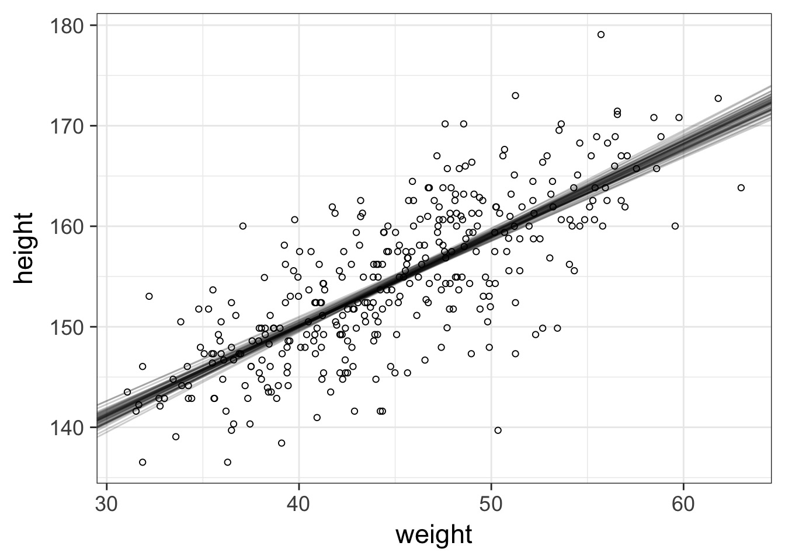
What about with fit intervals?
#1) Make a fake data frame over the relevant range
pred_df <- data.frame(weight=seq(30,65, length.out=200))
#2) Get the fit values & interval
pred <- link(weight_fit, data=pred_df, refresh=0)
pred_hpdi <- apply(pred, 2, HPDI)
#3) Put it all back together and plot
pred_df <- mutate(pred_df,
height = apply(pred, 2, mean),
lwr_fit = pred_hpdi[1,],
upr_fit = pred_hpdi[2,])What about with fit intervals?
geom_line and geom_ribbon for plotting
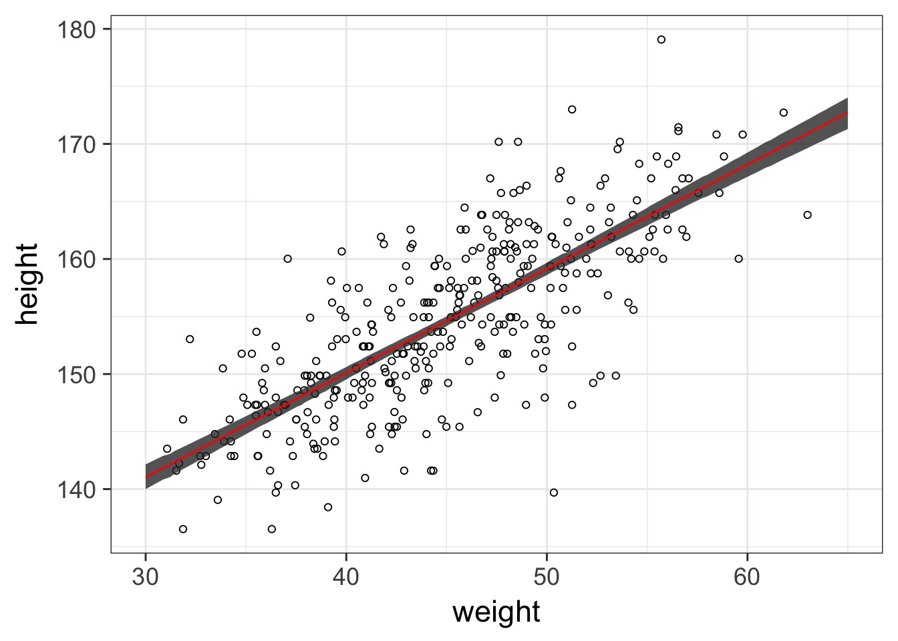
What about prediction intervals?
#1) Get the posterior prediction interval
pred_full <- sim(weight_fit, data=pred_df, refresh=0)
full_hpdi <- apply(pred_full, 2, HPDI)
#2) Put it all back together and plot
pred_df <- mutate(pred_df,
lwr_pred = full_hpdi[1,],
upr_pred = full_hpdi[2,])Prediction Interval
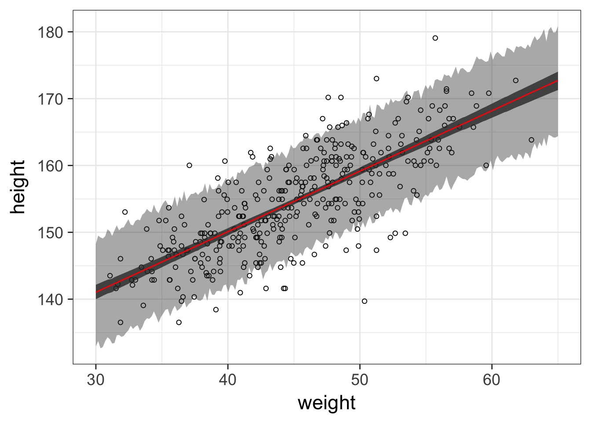
Polynomial Regression and Standardization
The Actual Data
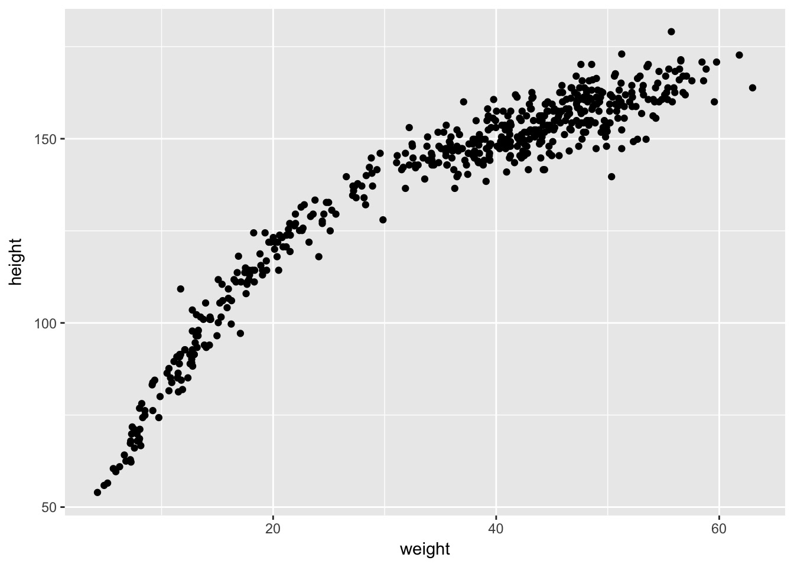
This is not linear
A nonlinear Model
Likelihood:
\(h_i \sim Normal(\mu_i, \sigma)\)
Data Generating Process
\(\mu_i = \alpha + \beta_1 x_i + \beta_2 x_i^2 + \beta_3 x_i^3\)
Prior:
\(\alpha \sim Normal(178, 100)\)
\(\beta_j \sim Normal(0, 10)\)
\(\sigma \sim U(0,50)\)
Before fitting this, Standardize!
- Standardizing a predictor aids in fitting
- Scale issues of different variables
- Scale issues of different variables
- Standardizing yields comparable coefficients
- You don’t have to
- But if you encounter problems, it’s a good fallback
Our Model
full_height_mod <- alist(
#likelihood
height ~ dnorm(mu, sigma),
#Data generating process
mu <- alpha +
beta1 * weight.s +
beta2 * weight.s2 +
beta3 * weight.s3,
#priors
alpha ~ dnorm(178, 100),
beta1 ~ dnorm(0, 10),
beta2 ~ dnorm(0, 10),
beta3 ~ dnorm(0, 10),
sigma ~ dunif(0,50)
)Making variables and Fitting
Howell1 <- mutate(Howell1,
weight.s = (weight-mean(weight))/sd(weight),
weight.s2 = weight.s^2,
weight.s3 = weight.s^3)
full_height_fit <- map(full_height_mod,
data = Howell1)Exercise
- Fit this nonlinear model
- Assess it
- Plot the fit and error
- Feel free to use
linkor the posterior to plot fit error
- Feel free to use
Solution
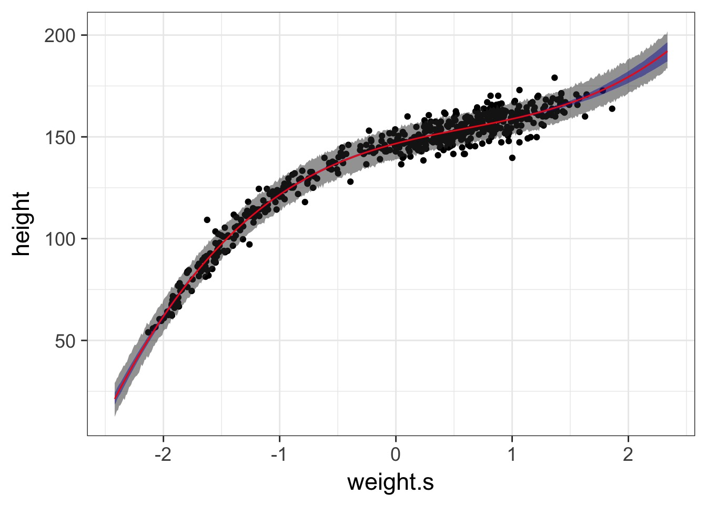
I hate that x axis
pred_plot +
scale_x_continuous(label = function(x)
round(x*sd(Howell1$weight) + mean(Howell1$weight),1)) +
xlab("Weight")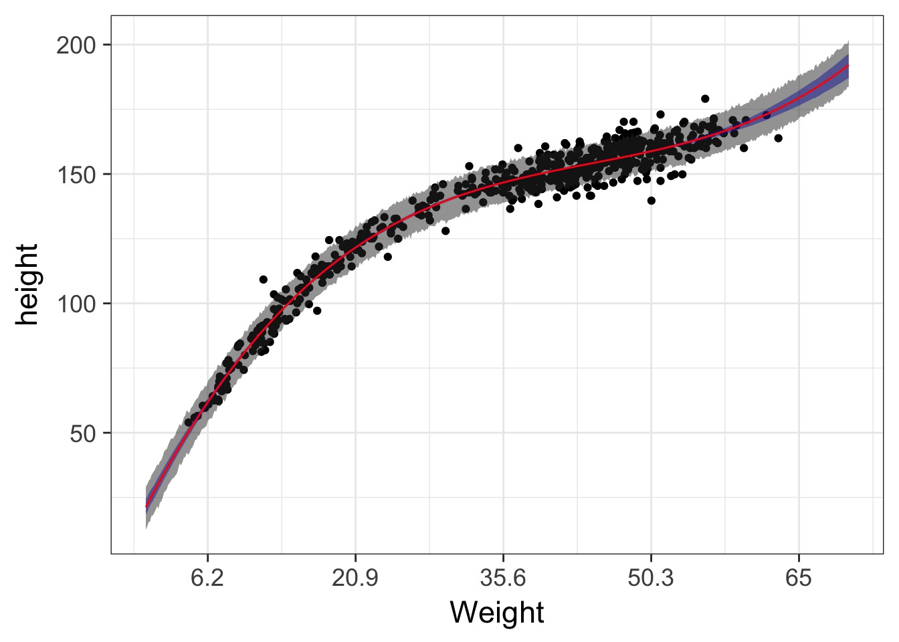